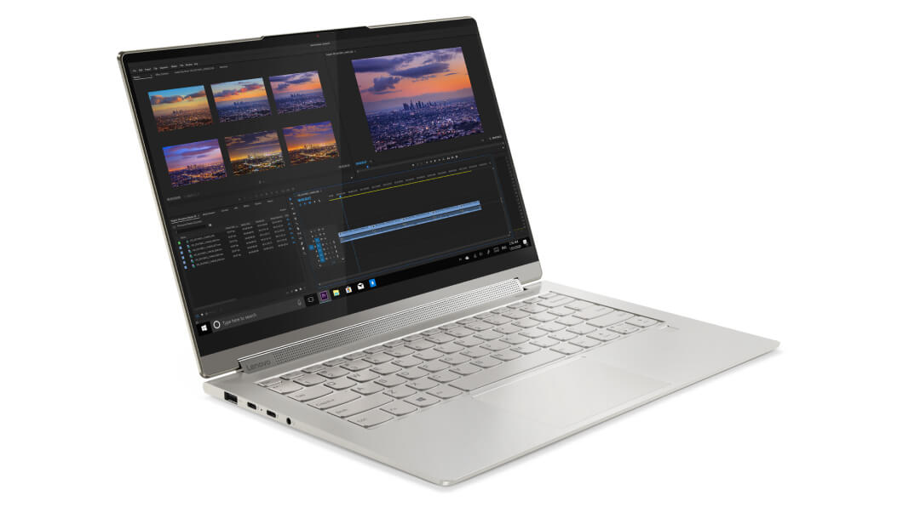
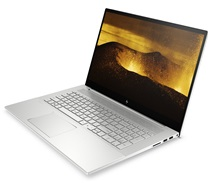
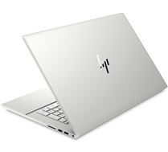

Lenovo Yoga 9i
Amaca yönelik tasarım ve performans
Yoga 9i (15 "), şık 2'si 1 arada metal bir kasada yenilikçi özelliklerle dolu,
deneyiminizi ilk sıraya koymak için tasarlandı.
10. Nesil Intel® Core ™ işlemciler, yaratıcılığınızın ve üretkenliğinizin erişim
alanlarını keşfetmenizi sağlar. Ve Dolby Vision ™ ile optimize edilmiş bir
15,6 "UHD ekranla, medya akışı, medya düzenleme ve daha fazlası için birinci sınıf
görseller yaşayacaksınız.

Lenovo Yoga 9i
Maksimum 5,3 GHz Turbo, 8 çekirdek ve 16 iş parçacığı içeren 10. Nesil Intel® Core ™ işlemcilerle
desteklenen Yoga 9i, masaüstü düzeyinde inanılmaz performans sunar. Bu tür bir güç,
sınırsız yaratıcılık ve eğlence için fotoğraf ve video düzenleme, müzik prodüksiyonu ve AAA
oyun başlıkları için yaratıcı araçlardan en zorlu yazılımı çalıştırma becerisi sağlar.
Ayrıca, her gün kullandığınız uygulamaları hızlandıracak güçlü NVIDIA GTX1650 Ti grafik kartıyla
performansınızı güçlendirin.

Lenovo Yoga 9i
Hassas işlenmiş, uzay sınıfı metal içeren Yoga 9i (15 ″), beklentilerinizi açığa çıkarmanızı sağlar.
Bu şık 2'si 1 arada ürün, klasik Arduvaz Grisi renginde mevcuttur ve deneyimleriniz göz önünde
bulundurularak özenle tasarlanmıştır. Masanızın üzerine kurun ve profesyonel bir iş akışı
için harici bir monitöre bağlayın, DJ'lik yaparken bir masaya sabitleyin veya en sevdiğiniz
programları izlemek için tablet modunda kanepede kıvrılın.

Lenovo Yoga 9i
• 10. Nesil Intel® Core ™ i9
• Windows 10 Pro
• 16 GB'a kadar hafıza
• 2 TB'a kadar SSD PCIe
• NVIDIA® GeForce ™ GTX 1650 Ti
• Narrow 3.84mm left/right bezel: 15.6″ UHD (3840 x 2160) IPS,
• Up to 13 hours pil ömrü
• Dolby Atmos® ile Dönen Sound Bar
• 2 x subwoofer
• 2 x tweeter
• 2 x web kamerası mikrofon
• İnce HD kamera
• Wifi 6 (2x2 802.11ax)
• Bluetooth® 5.0
• USB-A 3.2 Gen 1
• 2 x USB-C 3.2 Gen 2 (Thunderbolt 3, DisplayPort ™ ve güç dağıtımı)
• Kulaklık / mikrofon birleşimi